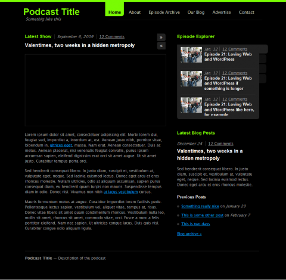

Since the feedback for the mock-up of the podcast theme for was so great, here is a little preview of how far I have gotten.

6:00 AM podcast theme preview
What do you want from a theme, podcast author?
Detailed descriptions of your publishing workflow would be really useful. If you have any ideas on how to make things easier and better, please leave a comment.
Please make it wide enough to put a Video from Vimeo in it. Don’t take YouTube embed as your Layout width.
GPSchnyder, I’ll be sure to take that into account.
This is exactly what I’m looknig for for my new site. Good job! When do you anticipate it being available for download?
Mayba you could also make the Colors chooseable in the backend? Looks good so far.
It looks good!
Try to make it easy and fast to post videos, current “premium” (paid) video blog themes require a lot of work with embedding of thumbnails and in some of them you even have to use “custom fields” to embed videos.
This is a hassle if you have hundreds or thousands of videos…
Just stumbled across your idea while looking for WordPress video themes: as everyone else I noticed that there are quite a few of them and the best ones are premium themes.
I’ve been asked to set up a webtv, the first webtv of my city: we have little money to spend and the project is starting as volunteer-based, “just in the free-time” one.
But it’s not about money: I’ll be glad to donate money to you instead of Quommunication or Revolution2 guys.
The layout idea and the graphic are awesome: I’m more worried about video management features. I’m a long time WordPress user (and kind of a “WP ninja”) so I understand that a platform that is born to handle blogs could face shortcomings while handling a videoblog or a webtv.
I’d like to know how are you thinking to develop the “background” of this theme, if you’re considering the use of ad hoc video managemente plugins and so on: for example, you could think about the fact that if someone, like me, wants to do a heavy use of this theme there could be the need for “TV Show Name” replacing the “Category”. It’s a little hack but for a video-centric theme like this it could be a neat feature.
Also, the idea of having both a “video blog” and a “text blog” is critical: Quommunication’s Video doesn’t have this and it’s a shame – considering that’s a premium theme…
Sorry for the lengthy comment, I’m presenting some ideas for my webtv project in a week and I’d like to know if I can count on you. ;-)
Good work.
This is looking fabulous, and really looking forward to this theme.
Regards,
Stefaan
As an audio podcaster, the ideal would be easy (no issue) integration with the Podcasting plugin.
Also, I’d totally pay for this theme. Just thought I’d put that out there. The mockups looked fantastic!
Kaspars: I am very happy that someone is trying to support the GPL community this excellent way. There is no really useable free video theme now.
I am looking forward to your excellent theme, I am planning to redesign using it (until now I am using GPLed Revolution TV, which doesn’t satisfy me at all) – your mockup looks and works amazing (jqery love).
Hope you didn’t hang up with it ;)
Hey, everyone, thanks for the encouraging words and suggestions. It really means a lot. Although I am currently very busy with other work (outside the web), I’ll be sure to keep you all updated on how this theme evolves.
show me the theme…show me the theme ;)
when are you releasing this theme dude? i have lost all my hair waiting for this theme!
Options I thought of:
Ability to use the sidebar on the right or left side.
Ability to remove the sidebar.
Choose how many videos are shown on homepage.
Ad spot on the top, sidebar, bottom,
Integration with twitter on the sidebar.
Separate link backs and comments,
Ability to post author information at the beginning and end of the post or page.
Custom author homepage.
Social links built in. Ability to hide them or show them.
Auto generate thumbnails.
Ability to use custom images for videos.
Ability to add text to the video post.
Ability to change the colors of the site in the back end using custom colors.
Ability to specify video width and height.
Recent blog posts widget or section.
Threaded comments.
Ability to rate videos.
Ability to add video comments.
Notify users of comments placed after they have commented.
Custom author page with Author homepage, bio, name, social link.
That’s all I got for yeah. Good luck with the theme.
Love the theme! Is it available yet for download?
promising idea, nice design. when can we have it?
suggestions:
– scheduler: include a calendar to announce upcoming podcasts.
– prepare layout for BIG flash players such as soundcloud
– make search an important usecase (podcast archives)
– give live events a special look (ongoing event stream)
– two different themes for audio and video.
– use thematic theme framework as a base